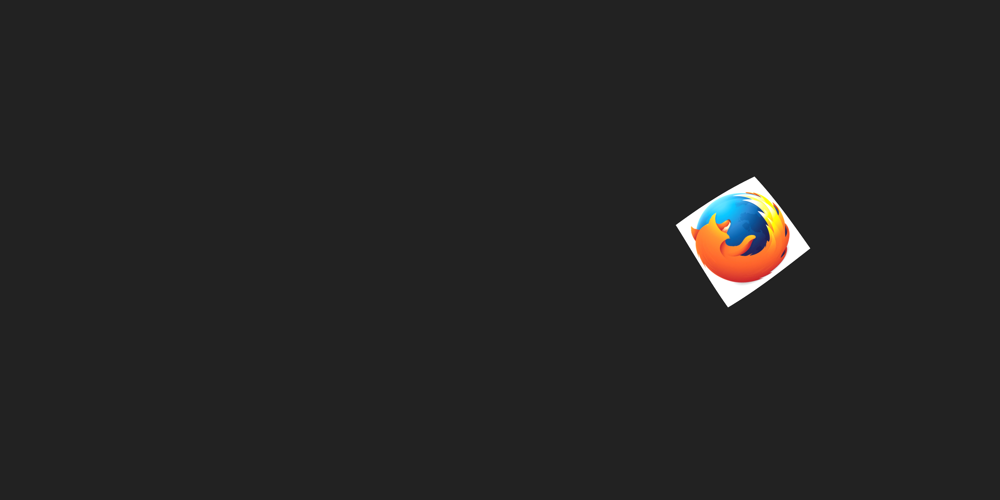
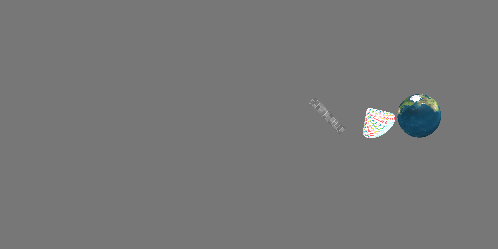
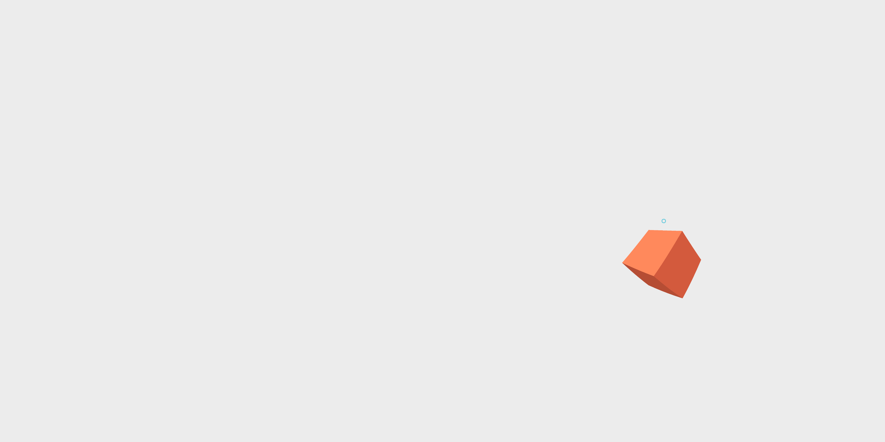

Realidade aumentada descomplicada!
A-frame e AR.js

Felipe Do E. Santo
- Professor
- Desenvolvedor Web desde 2006
- Mozillian e Tech Speaker
Nossa missão é garantir que a internet seja um recurso público, aberto e acessível a todos.
Uma internet que realmente coloque as pessoas em primeiro lugar!
Algumas iniciativas
Rust, WebVR, Mozilla Campus Clubs, Leadership Toolkit, Mozilla Clubs entre muitas outras!
WebVR
WebVR é uma plataforma de realidade virtual com todas as vantagens da web: aberta, conectada e instantânea.
É um conjunto de APIs no Browser que habilitam a rederização WebGL direto para os headsets e aceso a vários sensores.
Onde posso utilizar hoje?
Firefox, Chrome, Safari e Samsung Internet Browser no celular.
Firefox Beta e Chromium no desktop.
A-Frame
A-Frame é um framework opensource, lançado em dezembro de 2015 pela Mozilla para a criação de cenas 3D e de realidade virtual para a Web.
Recursos
- Baseado em HTML
- Multiplataforma
- Arquitetura Entidade-Componente
- Performance
- Compatível com várias bibliotecas e frameworks
- Inspetor visual
- Componentes / Registry
Instalando
https://aframe.io/releases/0.7.0/aframe.min.js
$ npm install aframe
Exemplo
Hello world
<html>
<head>
<script src="js/aframe.min.js"></script>
</head>
<body>
<a-scene>
<a-entity rotation="0 45 45" geometry="primitive: box" position="0 2 -2" material="src: img/resources/firefox.jpg"></a-entity>
<a-sky color="#222"></a-sky>
</a-scene>
</body>
</html>
Mais objetos!
Câmera e eventos
Câmera
Eventos
Modelos 3D
Mixins
Links



Mais detalhes
AR.js - Efficient Augmented Reality for the Web
#Comofaz?
...
...
Obrigado!
#MozillaBrasil #CPBR11 #Aframe
#MozillaBrasil
#CPBR11 #Aframe